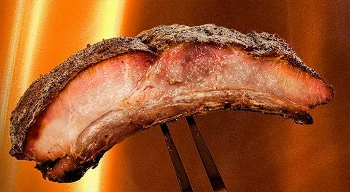

Last Meal Ribs

Last Meal Ribs
The best smoked ribs you've ever tasted.
These are the best BBQ pork ribs you will ever eat. They are so good you would ask for them as your "last meal".
We're talking classic Southern barbecue ribs here, the barbecue ribs that win barbecue championships.
The recipe is a melange of flavors: A complex spice rub, elegant hardwood smoke, tangy sweet sauce,
all underpinned and held together by the distinct flavor of pork.
Ingredients
Meathead's memphis rub
Mix all ingredients together well.
- 3/4 cup firmly packed brown sugar
- 3/4 cup white sugar
- 1/2 Paprika
- 1/4 cup garlic powder
- 2 tablespoons ground black pepper
- 2 tablespoons ground ginger powder
- 2 tablespoons onion powder
- 2 teaspoons rosemary powder
For the ribs
- 1 slab ribs, St Louis cut is ideal
- 4 tablespoons of Meathead's memphis rub
- 1 teaspoon coarse salt
- (Optional) 6 tablespoons of your favourite BBQ sauce